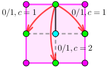
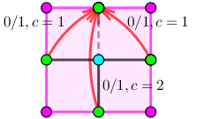
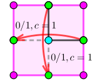

曾经有一款流行的游戏，叫做 Infinity Loop，先来简单的介绍一下这个游戏：
游戏在一个 $n \times m$ 的网格状棋盘上进行，其中有些小方格中会有水管，水管可能在方格某些方向的边界的中点有接口，所有水管的粗细都相同，所以如果两个相邻方格的公共边界的中点都有接头，那么可以看作这两个接头互相连接。水管有以下 $15$ 种形状：
游戏开始时，棋盘中水管可能存在漏水的地方。
形式化地：如果存在某个接头，没有和其它接头相连接，那么它就是一个漏水的地方。
玩家可以进行一种操作：选定一个含有非直线型水管的方格，将其中的水管绕方格中心顺时针或逆时针旋转90度。
直线型水管是指左图里中间一行的两种水管。
现给出一个初始局面，请问最少进行多少次操作可以使棋盘上不存在漏水的地方。
第一行包含两个正整数 $n, m$ ($n \cdot m \leq 2000$)，代表网格的大小。
接下来 $n$ 行，每行 $m$ 个整数，每个数是 $\left[ 0, 15 \right]$ 中的一个，你可以将其看作一个 $4$ 位的二进制数，从低到高每一位分别代表初始局面中这个格子上、右、下、左方向上是否有水管接头。
特别地，如果这个数是 $0$，则意味着这个位置没有水管。
比如 $3$ ($\left( 0011 \right)_2$) 代表上和右有接头，也就是一个 L 形，而 $12$ ($\left( 1100 \right)_2$) 代表下和左有接头，也就是将 L 形旋转 $180^\circ$。
输出一行一个整数，表示最少的操作次数。如果无法达成目标，输出 $-1$。
首先是第一个问题：如何检验一个棋盘是否不漏水。
由循环流的经验，可以看成：对于相邻两个格子 (比如是左右关系)，左边的格子有向右的水管接头当且仅当右边的格子有向左的水管接头。
于是，我们只需要判定这样的接头是否成对出现。
首先，容易求得总的接头数 $cnt$，然后，由于网格图也是二分图，我们可以仿照二分图去建图，对于每个格子，如果左、上、右、下位置可以和其它地方接上，则在两部之间连边。
最终，如果这个二分图存在大小为 $\dfrac {cnt} 2$ 的匹配，则说明这个棋盘不漏水，否则说明它漏水。
那如果水管可以旋转，又该怎么办呢？
为了更好地模拟流水的过程 (更好地建图)，我们将这个二分图改成网络流的形式：
设二分图 $G = \left( V_1, V_2; E \right)$。$E$ 为全体相邻格子所构成的边，对于每个 $V_1$ 中的格子 $v$，如果它在某个方向 $d$ 上有接头，则连边 $S \xrightarrow 1 \left( v, d \right)$，否则连边 $\left( v, d \right) \xrightarrow 1 T$ (其中 $S$ 为源点，$T$ 为汇点)。
那么，对于一个可以旋转的格子，我们根据格子的形状分为 $6$ 种情形讨论：
什么都不用干就好。
还是什么都不用干。
记该格子为 $\left( v, d \right)$，不妨设 $v \in V_1, d = 0$ (向上)。
此时，我们可以以 $1$ 的代价将 $d$ 变成 $1$ 或 $3$，以 $2$ 的代价将 $d$ 变成 $2$。
比如说我们把 $d$ 变成了 $1$，那么，作为源点流过来的点，它要流向 $\left( v, 1 \right)$。我们可以在网络中连一条从 $\left( v, 0 \right)$ 到 $\left( v, 1 \right)$ 的边，容量为 $1$，费用为 $1$。
类似地，还要连边 $\left( v, 0 \right) \to \left( v, 3 \right)$，容量为 $1$，费用为 $1$，以及边 $\left( v, 0 \right) \to \left( v, 2 \right)$，容量为 $1$，费用为 $2$。整个内部连边方式如下：
这个和单向非常类似，可以通过枚举哪边不流而建出类似的图，连边方式如下：
可以发现，$0, 2$ 向 (上下) 中至少选择 $1$ 个，$1, 3$ 向 (左右) 中至少选择 $1$ 个；$0, 2$ 向与 $1, 3$ 向之间相互独立。
于是建图方式如下：
看起来貌似很难建图。不过既然出题人都不会建，那他只能强行规定不能转喽~
同理，若 $v \in V_2$ 的情况也是类似地，只是所有边都反个向而已。
这样建图完毕后，跑一遍最小费用最大流，如果仍然是满流 (流为 $\dfrac {cnt} 2$)，则说明可解，最少的操作次数即为最小费用，否则无解。
总时间复杂度大概就是费用流的复杂度吧 ($O \left( n^2 m^2 \right)$？)。
#include <bits/stdc++.h>
#define ad(x) ((x - 1 ^ 1) + 1)
const int N = 2054, fy[16] = {0, 2244, 3353, 216, 622, 0, 45, 3564, 1971, 135, 0, 2203, 114, 1862, 561, 0};
namespace CF {
const int N = 10054, M = 100054, INF = 0x7f7f7f7f;
struct edge {
int u, v, c, f;
edge (int u0 = 0, int v0 = 0, int c0 = 0, int f0 = 0) : u(u0), v(v0), c(c0), f(f0) {}
} e[M];
int V, E, si = 1, ti = 2, flow, cost;
int first[N], next[M];
int dep[N], cur[N], que[2003731];
char in_que[N], used[N];
inline void addedge(int u, int v, int c, int f) {
e[++E] = edge(u, v, c, f); next[E] = first[u]; first[u] = E;
e[++E] = edge(v, u, -c); next[E] = first[v]; first[v] = E;
}
bool bfs() {
int h = 1000000, t = h + 1, i, x, y;
memset(dep, 127, (V + 1) << 2);
que[h] = ti; dep[ti] = 0; in_que[ti] = 1;
for (; h < t; ) {
x = que[h++]; in_que[x] = 0;
for (i = first[x]; i; i = next[i])
if (dep[y = e[i].v] > dep[x] - e[i].c && e[ad(i)].f)
if (dep[y] = dep[x] - e[i].c, !in_que[y])
in_que[y] = 1, (dep[y] >= dep[que[h]] ? que[t++] : que[--h]) = y;
}
return dep[si] < INF;
}
int dfs(int x, int lim) {
int a, c, f = 0;
if (x == ti || !lim) return lim;
used[x] = 1;
for (int &i = cur[x]; i; i = next[i])
if (dep[e[i].v] == dep[x] - e[i].c && e[i].f && !used[e[i].v]) {
a = std::min(lim - f, e[i].f);
c = dfs(e[i].v, a);
e[i].f -= c; e[ad(i)].f += c;
if ((f += c) == lim) return f;
}
return f;
}
void Dinic() {
int f;
for (cost = flow = 0; bfs(); ) {
memcpy(cur, first, (V + 1) << 2);
memset(used, 0, V + 1);
flow += f = dfs(si, INF);
cost += dep[si] * f;
}
}
}
bool rev;
int R, C;
int a[N][N];
inline void link(int u, int v, int c = 0) {rev ? CF::addedge(v, u, c, 1) : CF::addedge(u, v, c, 1);}
int main() {
int i, j, k, s, t, state, A[2] = {0, 0}, &g = CF::V; g = 3;
scanf("%d%d", &R, &C);
for (i = 0; i < R; ++i)
for (rev = i & 1, j = 0; j < C; ++j, g += 4, rev ^= 1) {
if (i) link(g, g - 4 * C + 2);
if (j) link(g + 3, g - 3);
scanf("%d", &state);
for (k = 0; k < 4; ++k) if (state >> k & 1) link(1 + rev, g + k), ++A[rev];
for (k = 0; k < 3; ++k)
if ((s = fy[state] >> (k * 4) & 3) != (t = fy[state] >> (k * 4 + 2) & 3))
link(g + s, g + t, k + !k);
}
if (*A != A[1]) return puts("-1"), 0;
CF::Dinic(), printf("%d\n", CF::flow == *A ? CF::cost : -1);
return 0;
}
坑1：对于连边的过程，可以使用 int 内打表的方式提前记录要连那些边，避免冗长的讨论。
坑2：最后匹配大小 (最大流的大小) 注意是 $\dfrac {cnt} 2$ 不是 $cnt$。